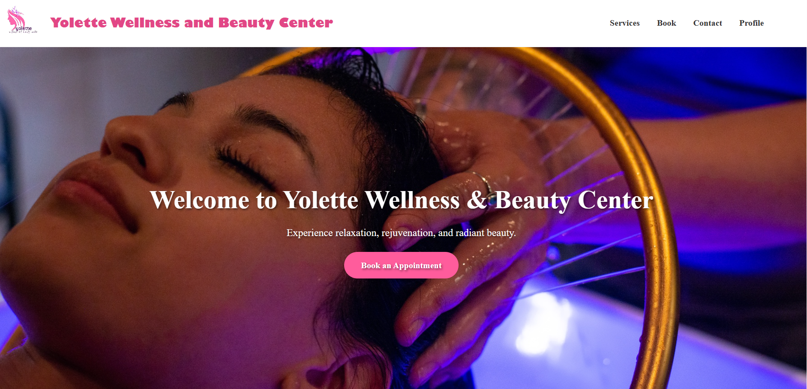
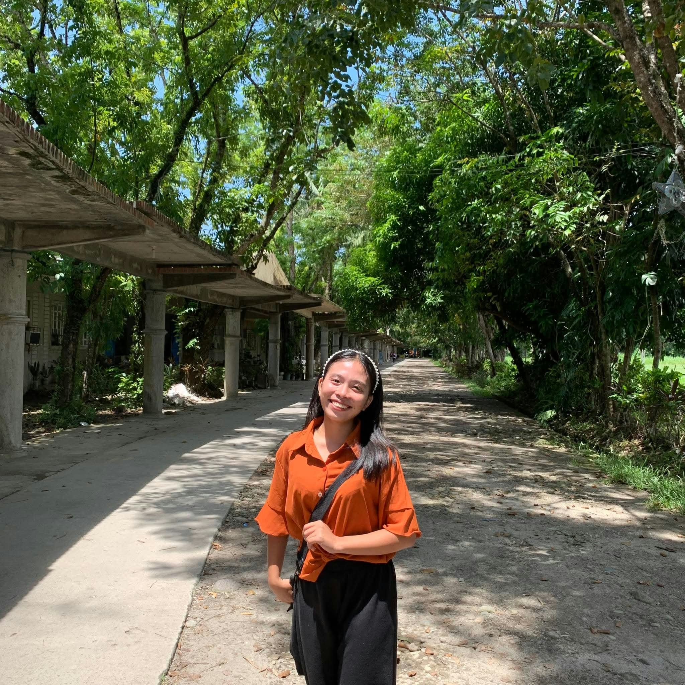

School project · July–October 2025
Spa Appointment Booking System
A web-based system that lets users schedule, view, and manage appointments online.
Web application · Appointment management
Information Technology · 2023—present
IT student · aspiring web developer, animator & editor
I’m studying Information Technology at Our Lady of Lourdes College Foundation. I enjoy both the creative and technical sides of digital work—from building websites to exploring animation and editing.
Marjorie P. Alforte
Information Technology student
A bit about me
I’m a Bachelor of Science in Information Technology student at Our Lady of Lourdes College Foundation. My studies have introduced me to the many ways technology can solve everyday problems, and I’m especially interested in building websites that are straightforward to use.
My school project, a Spa Appointment Booking System, gave me a chance to work on a practical idea: helping users schedule, view, and manage appointments online. Outside of development, I’m interested in animation and editing as ways to tell stories and bring ideas to life.
Studying
BS Information Technology
Interested in
Web development
Also exploring
Animation & editing

Selected work
School projects where I’ve applied what I’m learning in Information Technology.

School project · July–October 2025
A web-based system that lets users schedule, view, and manage appointments online.
Web application · Appointment management
.jpg)
.jpg)
Group project · October 2025
A robotics project developed with classmates to detect sound in the library.
Robotics · Sound detection
Resume
Intern applicant · Web Developer / Animator / Editor
Address: Zone 3, Casay, Lupi, Camarines Sur
Mobile: 0994 470 8007 Email: marjoriealfortel3@gmail.comInformation Technology student seeking an internship in web development, animation, or editing. Eager to apply my academic knowledge, contribute to creative and technical projects, and continue developing my skills in a professional environment.
Developed a web-based appointment booking system that allows users to schedule, view, and manage appointments online.
Collaborated with classmates on a robotics project designed to detect sound in the library.
Our Lady of Lourdes College Foundation · Vinzons Ave., Lag-On, Daet, Camarines Norte
2023–Present
Casay National High School · Casay, Lupi, Camarines Sur
2021–2023
Casay National High School · Casay, Lupi, Camarines Sur
2017–2021
Casay Elementary School · Casay, Lupi, Camarines Sur
2011–2017
Senior High School Teacher
Casay National High School
Casay, Lupi, Camarines Sur
Senior High School Teacher
Casay National High School
Casay, Lupi, Camarines Sur
Senior High School Teacher
Casay National High School
Casay, Lupi, Camarines Sur
Get in touch
I’m looking for an internship in web development, animation, or editing. Feel free to reach out by email or connect with me online.